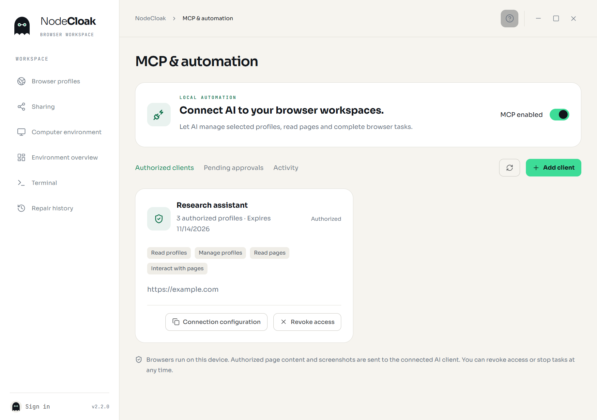
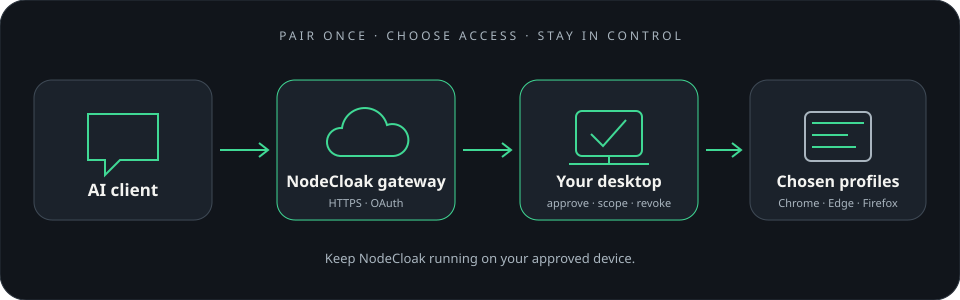

连接到 AI 客户端
NodeCloak 本机 MCP 使用 stdio 连接。桌面端在本机启动受控服务；使用期间保持 NodeCloak 运行。
打开 NodeCloak 的 MCP 页面
在左侧栏选择「MCP」，启用服务并选择「添加客户端」。将客户端命名，方便之后查找和撤销。
设置授权范围
选择客户端可访问的浏览器副本、工具权限、有效期和网页来源；使用文件工具时，再选允许访问的目录。
复制连接配置
创建授权后打开「连接配置」，复制给对应 MCP 客户端。配置包含当前桌面程序路径和授权标识，不需要填写端口。
在客户端确认连接
保存 MCP 服务器设置后重启该连接。回到 NodeCloak 确认客户端显示为已连接，再使用授权的副本。

请确认已安装的桌面版本包含左侧「MCP」入口。客户端配置依赖 NodeCloak 的安装位置；移动或重装应用后，重新复制连接配置。
在 Codex 中添加
- 在 NodeCloak 的 MCP 客户端卡片中创建授权，复制显示的 stdio 连接配置。
- 在 Codex 设置中打开 MCP 服务器设置，新增名称为
nodecloak的服务器。 - 将 NodeCloak 给出的启动命令填写为程序路径，把参数逐项放入参数列表，然后保存。
- 重新连接后，检查 Codex 已发现 NodeCloak 工具，并在 NodeCloak MCP 页确认客户端在线。
command: 使用 NodeCloak 生成的程序路径
args: 使用 NodeCloak 生成的连接参数
连接配置是给 MCP 客户端读取的本机授权信息。只粘贴到你信任的客户端；不要放进公开聊天、截图或仓库。
从远程 AI 客户端连接
NodeCloak 3.0.0 支持远程 MCP。支持 OAuth 的 AI 客户端通过 HTTPS 连接，浏览器在你授权的桌面设备上运行。

- 登录 NodeCloak 桌面端并完成设备授权，在「MCP → 远程连接」启用服务。
- 在 AI 客户端添加桌面端显示的 MCP 地址，默认是
https://nodecloak.com/mcp。 - AI 客户端打开授权网页后，将网页上的授权码输入桌面端，选择「查看授权请求」。
- 核对客户端名称和回调地址，选择副本、权限、网站来源、文件目录与有效期，再确认授权。
- 授权网页返回 AI 客户端后即可开始使用。使用期间保持桌面端运行并联网。
网页文字和截图会经 NodeCloak 网关传到对应的 AI 客户端。你可以在桌面端查看连接或随时撤销访问。需要增加权限时，由 AI 客户端重新发起授权，再到桌面端确认。
退出账号、关闭 MCP 或撤销连接后，该连接会停止接收操作。重新连接前可先查看实际页面和任务状态，再继续工作。
控制客户端能做什么
每个 MCP 客户端都有独立授权。只勾选当前任务需要的权限和副本；之后可以在已授权客户端列表调整或撤销。
| 权限 | 适用操作 |
|---|---|
读取副本信息 | 查看授权范围内的副本、指纹设置、服务状态和任务状态。 |
管理副本 | 新建、编辑、复制、启动、停止、恢复副本，检测代理或重新生成指纹。 |
读取网页 | 读取标签页、iframe、页面快照，等待页面和获取截图。 |
操作网页 | 打开标签、导航、点击、填写、选择、滚动及处理网页弹窗。 |
文件访问 | 在授权文件夹范围内上传文件或查看客户端下载。 |
同步副本 | 读取同步状态、预览变更、执行同步并处理冲突。 |
获准读取的页面文字和截图会通过你选择的 MCP 连接传给对应的 AI 客户端。授权网站来源，并在意外访问前检查当前标签页。
「网页操作前确认」可按客户端配置。开启后，待执行的网页操作会显示在 NodeCloak 的「待确认操作」中，核对后再允许执行；需要连续自动化时，可在客户端授权设置中调整确认方式。
删除副本、重新生成指纹和文件上传等操作仍会按产品安全规则要求额外确认。到「已授权客户端」随时撤销客户端访问。
浏览器控制的基本流程
一次任务通常从选定副本开始，再打开页面、读取当前页面快照，最后对快照中指定的元素执行操作。
profiles_list查看获准的副本，选定后用profiles_start启动。tabs_open打开目标地址。使用网站来源白名单时，地址的实际跳转域名也要纳入授权。page_wait等待页面就绪，再用page_snapshot获取页面文字与最新元素引用。- 根据新快照中的引用调用
page_click、page_fill、page_select或page_scroll。 - 截图使用
page_screenshot；任务结束后可调用tabs_cleanup清理本任务打开的标签页。
导航超时不一定表示页面没有打开。读取当前标签与页面快照，确认实际位置后再决定是否重试，避免重复提交表单或重复购买。
异步任务
工具会返回任务状态。遇到 queued 或 running，使用 jobs_get 查询进度；状态为 awaiting_approval 时，到桌面端「待确认操作」处理。jobs_cancel 会停止后续步骤，已经完成的网页操作会保留。
通过 MCP 同步副本
先在 NodeCloak 完成云端同步初始化、保存恢复密钥并关联需要同步的副本，再给客户端开启「同步副本」权限。
sync_status配合profile_ids查看所选副本的同步状态。sync_preview生成变更预览，记录返回的preview_id。- 核对预览后，用相同副本列表和
preview_id调用sync_run。 - 有冲突时先重新获取预览，再用
sync_resolve选择本机、云端、双方或跳过。
预览在版本变化后会失效，需要重新生成。每次操作只处理当前客户端获准且明确选中的副本。
支持的浏览器
Chrome
管理选定的 Chrome 副本与标签页。
Edge
管理选定的 Edge 副本与标签页。
Firefox
管理选定的 Firefox 副本与标签页。
具体能力根据已安装的桌面端版本和浏览器而定。iframe 的页面内容读取也受网站来源授权限制。
连接中断？重新检查授权与程序路径。
确认 NodeCloak 正在运行、MCP 已启用，且客户端使用的是此设备生成的连接配置。